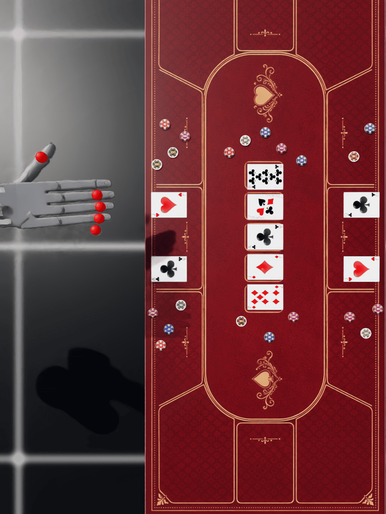
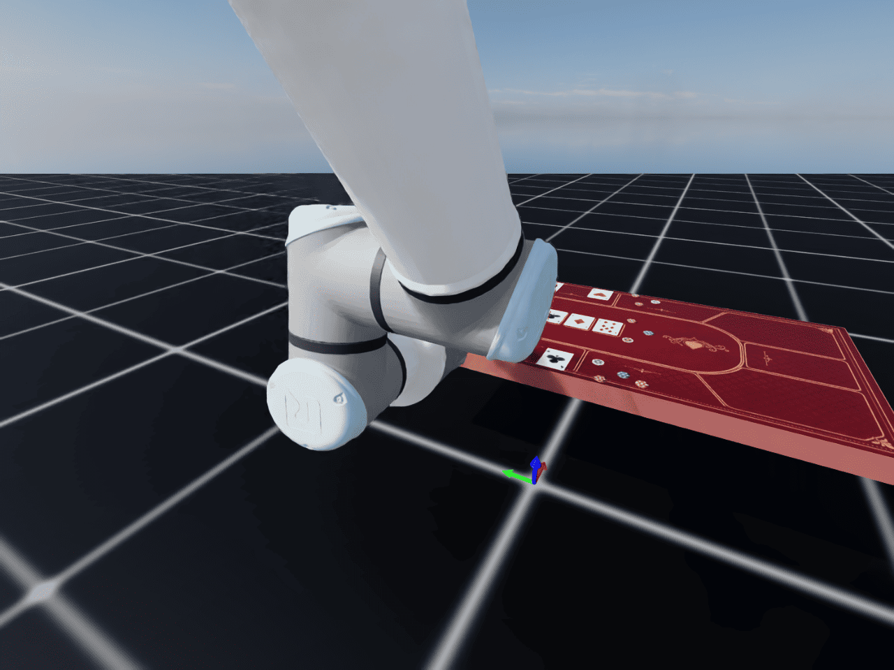
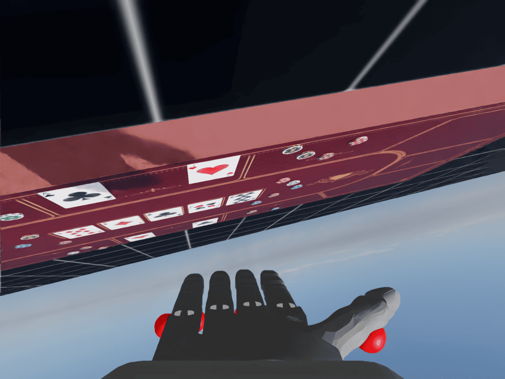
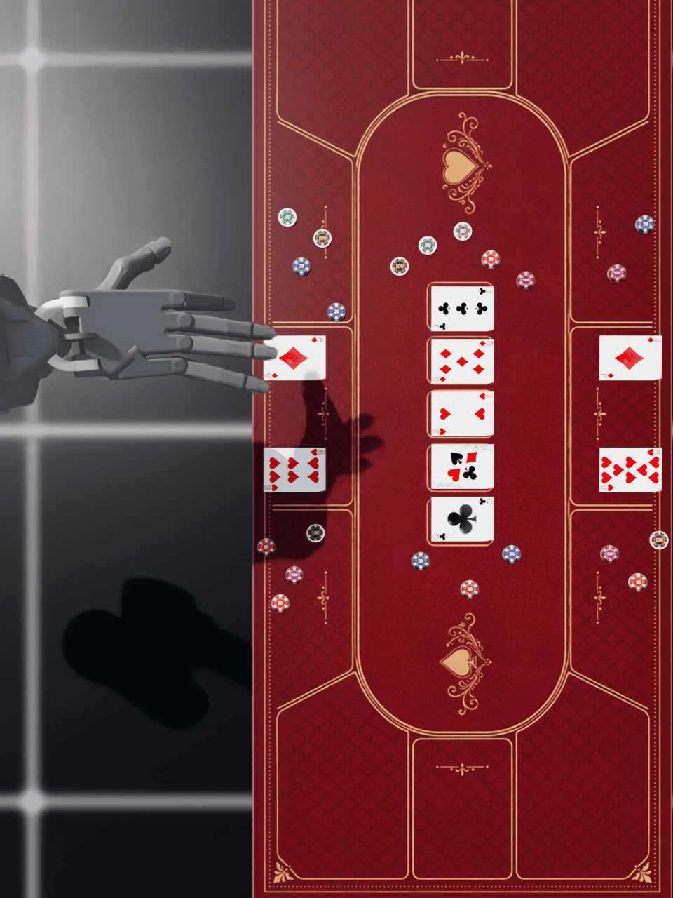
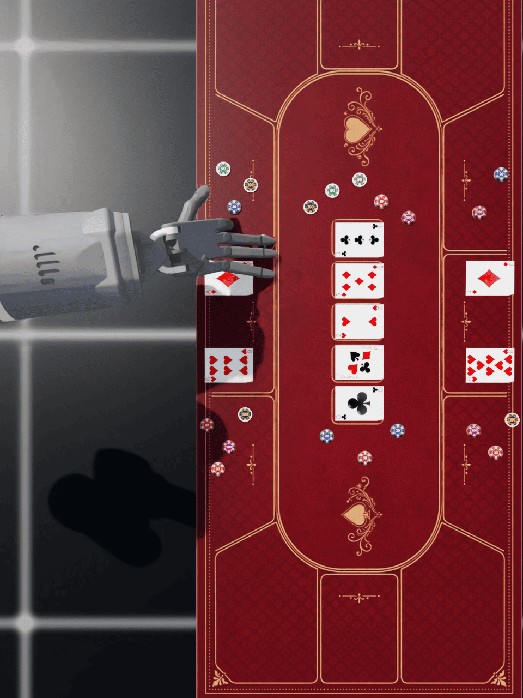
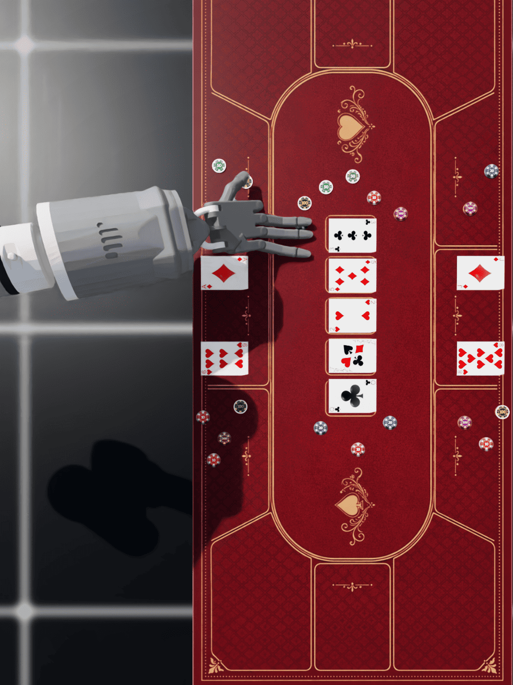
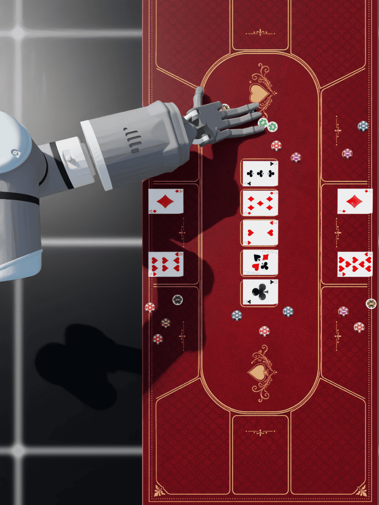
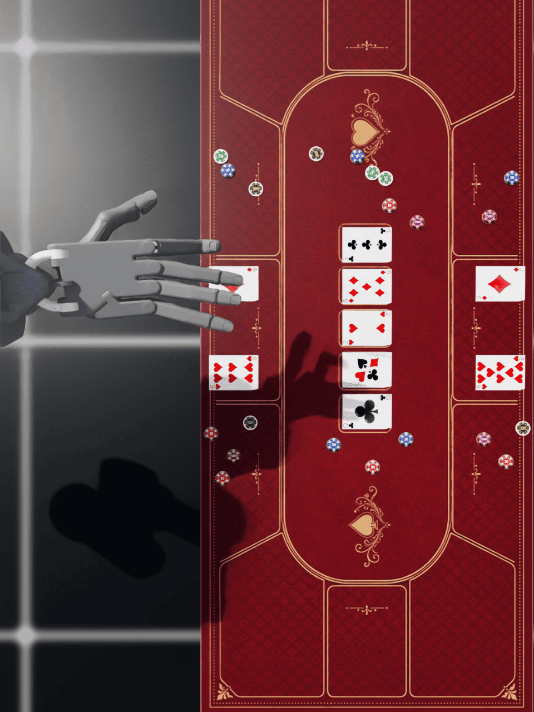

1,470 Demos
105 accepted teleoperated trajectories per primitive, split into 100 train and 5 validation demonstrations.
Policy Rollout
DexHoldem evaluates instruction-conditioned policy implementations through a fixed real-robot interface: multi-view observations in, action chunks for a UR arm and ShadowHand out.

105 accepted teleoperated trajectories per primitive, split into 100 train and 5 validation demonstrations.
Each policy outputs joint-position targets for 6 UR arm joints and 24 ShadowHand joints.
Top-down, third-person, and wrist RGB-D streams are paired with robot proprioception.
Each policy is evaluated as a single multi-task policy over a fixed primitive schedule.
Experiment Interface
The benchmark keeps game-level decision making outside the low-level policy. Each model receives the current primitive instruction, three RGB-D camera streams, and robot proprioception, then predicts a short horizon of 30-dimensional joint-position targets.
Top-down, third-person, and wrist RGB-D cameras plus arm-hand proprioception.
One of 14 primitive instructions is injected as an integer ID or text-token condition.
Joint-position targets cover 6 UR joints and 24 ShadowHand joints.
A robot client executes predicted action chunks under the fixed primitive schedule.
Primitive Suite
The policy benchmark is multi-task: the same implementation is trained and evaluated across pickup, placement, reveal, chip push, and chip pull primitives.
Policy Structure
DexHoldem Policy implements both task-trained imitation baselines and pretrained robot policy families under the same action interface.
DP and ACT consume ObsEncoder features: RGB/depth encoders, robot-state
MLPs, and optional instruction embeddings. DPMax, RDT, and Cortex use specialized
patch-token and text-token paths for higher-capacity fusion.
DP can concatenate instruction features or use a dedicated condition token. ACT treats instruction as its own token stream. DPMax, RDT, and Cortex use instruction tokens in alternating condition-injection paths.
DP, DPMax, and RDT denoise action chunks; ACT decodes action queries from a CVAE latent; Cortex separates trajectory planning from a proprioceptive refiner.
Training and Deployment
| Stage | Implementation | Purpose |
|---|---|---|
| Train | train.py with registered model names and model-specific scripts |
Run multi-task imitation learning with shared logging, checkpoints, and validation. |
| Encode | Frozen DinoV2 or SigLIP features; trainable ResNet18 for lightweight models | Keep large vision backbones reusable while allowing model-specific fusion. |
| Serve | deploy_policy.py, deploy_policy_cortex.py, or OpenPI deployment scripts on port 13579 |
Expose a real-time inference server for action-chunk prediction. |
| Execute | robot_client.py and robot_client_cortex.py send observations and execute predicted joint targets |
Close the loop on the ShadowHand-UR platform under the same primitive schedule. |
| Score | SP, DC, TF, DF labels aggregated as SPSR and TCR | Separate clean scene-preserving success from disruptive completion and failure. |
| Model | Visual Backbone | Policy Structure | Instruction Path |
|---|---|---|---|
| Diffusion Policy | DinoV2 CLS or ResNet18 | DDPM/DDIM denoiser with Transformer cross-attention or conditional UNet FiLM blocks | ObsEncoder integer/text embedding; optional dedicated condition token |
| DPMax | DinoV2 patch tokens | Patch-cross-attention diffusion transformer over image-region tokens | Learned instruction token alternates with DinoV2 patch-token cross-attention |
| ACT | Trainable ResNet18 | CVAE encoder plus Transformer policy encoder/decoder over action queries | Instruction is projected as a separate modality token |
| RDT | SigLIP-SO400M | 28-layer ACI diffusion transformer predicting clean action samples | Frozen T5 text tokens cross-attended on alternating layers |
| Cortex | SigLIP-SO400M | Hierarchical planner with a proprioceptive cerebellum-style residual refiner | Frozen SigLIP text tokens condition the planner; refiner uses plan and proprioception |
| pi0 / pi0.5 | OpenPI camera adapters | Pretrained VLA policies adapted to DexHoldem observations and 30-D actions | OpenPI language-action conditioning path |
| Model | Total Params | Trainable Params | Frozen Backbone |
|---|---|---|---|
| DP | 80.6M | 80.6M | None |
| DP Light | 141.3M | 141.3M | None |
| DP Max | 457.6M | 153.6M | 304M DinoV2 |
| ACT | 190.8M | 190.8M | None |
| Cortex | 1.39B | 110.1M | 1.28B, 3x SigLIP |
| RDT-1B | 2.52B | 1.24B | 1.28B, 3x SigLIP |


Appendix Simulation Check
These camera views and replay frames belong to the appendix simulation check. They visualize the reconstructed UR10e-ShadowHand environment and open-loop replay of recorded trajectories; policy results are still reported from physical robot rollouts.



Simulation Replay Sequence





